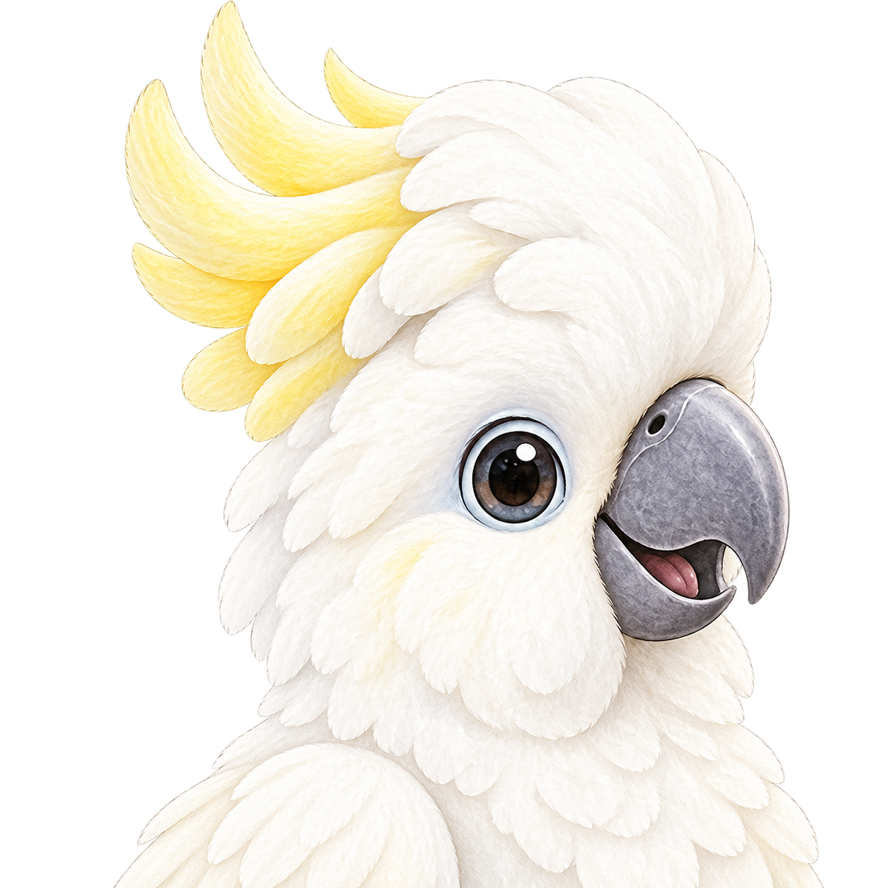
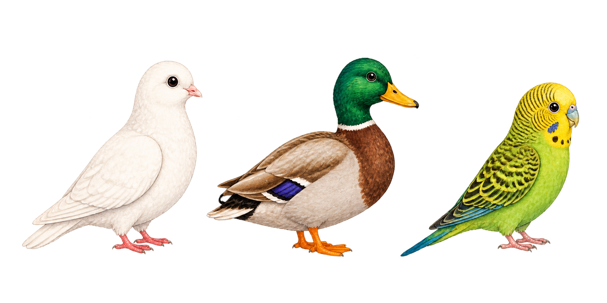
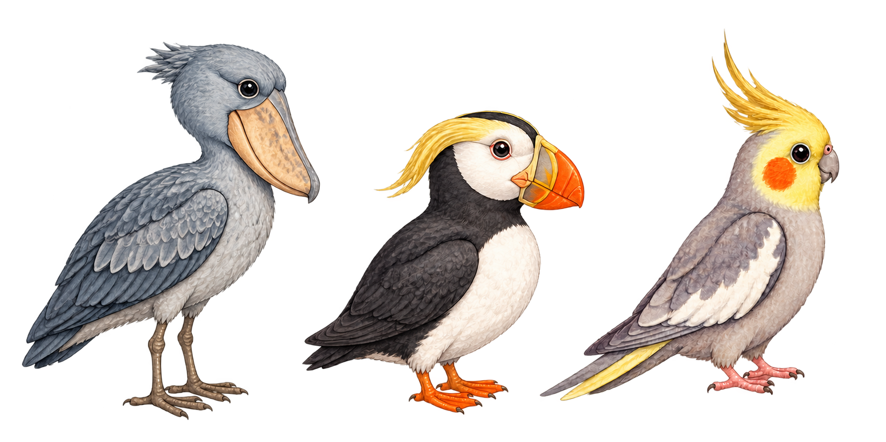
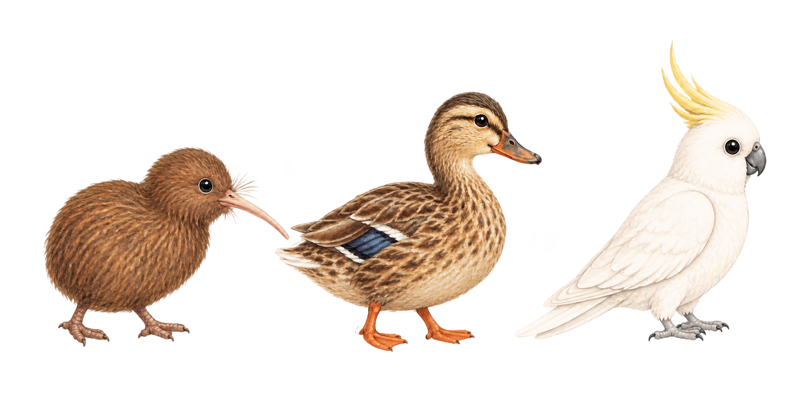
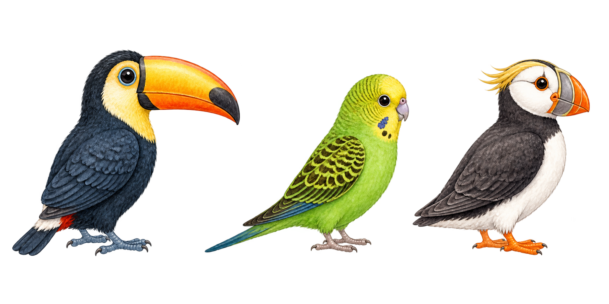
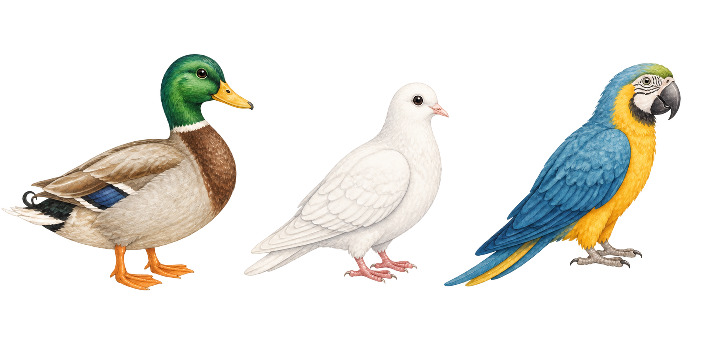

I am a Ph.D. student in Data Science at Seoul National University, advised by Prof. Yohan Jo. I received my B.S. in Computer Science and Engineering from SNU.
My research explores how to make foundation language models more transparent and better aligned with humans.
More specifically, I pursue human-centered AI research through a two-way lens of understanding:
1) Humans understanding models
Understanding, explaining, and controlling model behaviors, failure modes, and internal states.
2) Models understanding humans
Understanding human minds and social contexts, and adapting model behavior accordingly.



